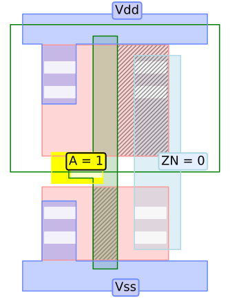

Quick Start
Auto-OPS is separated in two main tools: Auto-OPS and Auto-OPS GUI
Auto-OPS is the framework which is simulating the propagation of the body voltage in cells based on a GDS-II file.
On top of that we have build a Graphical User Interface (GUI) to performe Optical Probing Simulation based on the Auto-OPS tool.
Start Auto-OPS
Auto-OPS find and export the actives and reflective regions of a design based on the applied input.
All available parameters can be listed by the following command:
python3 main.py auto_ops --help
Option |
Description |
|---|---|
|
Show this help message |
|
Input Standard cell library GDS-II file (ex: input/stdcells.gds) |
|
Input Standard cell library Liberty file (ex: input/stdcells.lib) |
|
List of layers (ex: “[[1, 0], [5, 0], [9, 0], [[10, 0]], [[11, 0]], [[11, 0]]]”) Diffusion, N_WELL, Poly-silicon, Vias, Metals, Labels. |
|
Input pattern list applied as A-Z/0-9 order (ex: 1 0) |
|
Cell list for active regions extraction: empty for all cells (ex: INV_X1) |
|
Flip Flop output Q: default 0 (ex: 1) |
|
Input DEF design file (ex: input/c17.def) |
|
Input VPI output file (ex: input/vpi) |
|
Plot benchmark results. This could affect performance. |
|
Benchmark plotting area from bottom left to top right based on the patch size (ex: 0) |
|
Int in um^2 of the patch size: default 20 (ex: 20) {large number to plot in one-time) |
|
Output type (ex: reflection_over_cell) |
|
Enable verbose mode |
|
Perform cell technology unit test (Ex: 45) |
Usage example of Auto-OPS:
python3 main.py auto_ops --cell_list INV_X1 --input 1 --std_file input/stdcells.gds --lib_file input/stdcells.lib --layer_list "[[1, 0], [5, 0], [9, 0], [[10, 0]], [[11, 0]], [[11, 0]]]" --output reflection_over_cell --verbose
Which export you the reflective regions of the INVERTER gate of the NangateOpenCellLibrary with 45nm technology.
The output will be the following image:
{kind=link}
Start Auto-OPS GUI
To start Auto-OPS GUI you have to run the following command:
python3 main.py gui
Based on the fact the GUI tool is based on Auto-OPS the asked informations are slightly the same.
The in the file config/config.json you will find the default configuration and available parameters.
More information can be found in Configuration.
{
"laser_config": {
"lamda": 1300,
"NA": 0.75,
"is_confocal": true,
"x_position": 1500,
"y_position": 1500
},
"gate_config": {
"technology": 45,
"Kn": 1,
"Kp": 1.3,
"beta": 1,
"Pl": 1,
"voltage": 1,
"noise_percentage": 5
},
"op_config": {
"std_file": "input/stdcells.gds",
"lib_file": "input/stdcells.lib",
"def_file": "",
"vpi_file": "",
"selected_area": "0",
"selected_patch_size": "5",
"layer_list": [[1, 0], [5, 0], [9, 0], [[10, 0]], [[11, 0]], [[11, 0]]]
}
}
Start Auto-OPS GUI {Command line}
To start Auto-OPS GUI in command line interface you have to run the following command:
python3 main.py gui -cli
This cli interface needs also the proper config file as in the classical GUI.
To get the help of the gui -cli you can type:
auto_ops_gui> help
# or
auto_ops_gui> h
Here are the following accepted command in the command line interface:
Option |
Description |
|---|---|
|
To get the current variables current information |
|
To update a variable with a new value |
|
To save to save the propagation in the matrix |
|
To merge the propagation into the precedent matrix |
|
To reset the merged matrix to 0 |
|
To calculate the rcv value of the current matrix. You can use the {export} argument to save it in export/rcv.csv |
|
To plot the matrix. You can also plot the rcv, or the lase. If you add the argument {save} it will apply the configuration before plotting it |
|
To export the numpy array matrix |
|
To quit Auto-OPS |
To automate some experiments processes you can import bash scripts
python3 main.py gui -cli --script myscriptfolder/script.sh
And/Or even other GUI JSON configuration file to start multiple Auto-OPS instances
python3 main.py gui -cli --config myconfigfolder/new_config.json